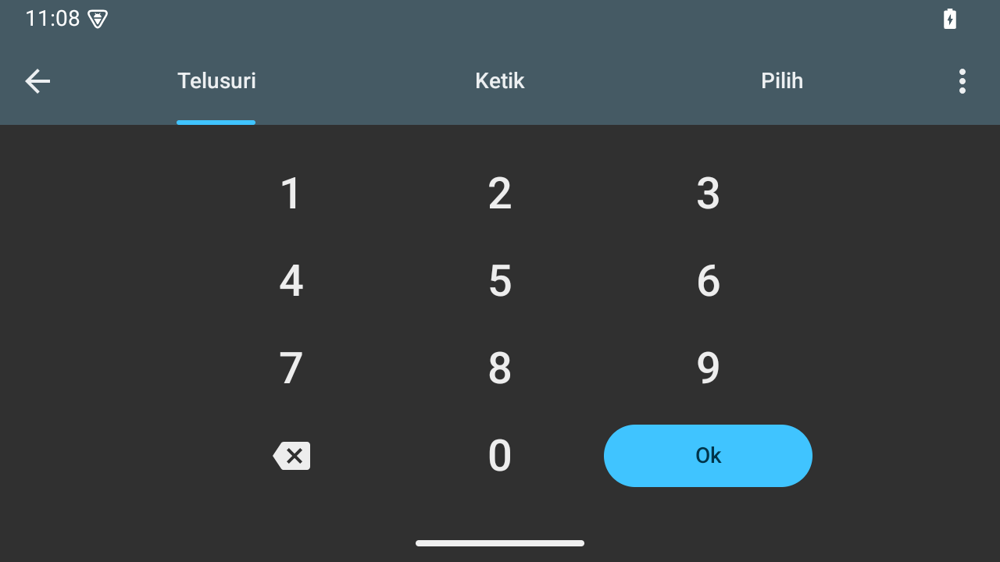
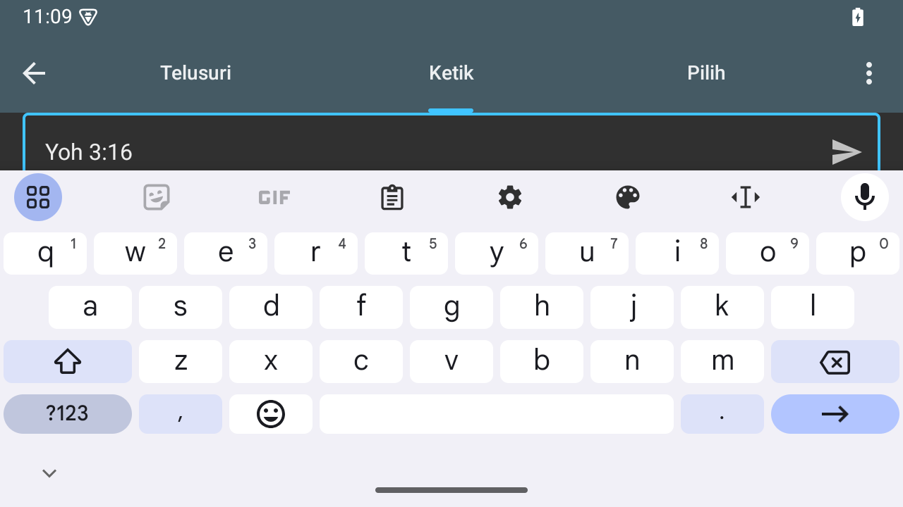

The Compose dialer is centered within a maximum 448 dp content width, plus 16 dp outer margins on each side. Portrait digit buttons are at least five eighths as tall as they are wide, with a 52 dp floor. Landscape buttons retain 52 dp height. The Direct tab scrolls as one vertical list so the reference field stays reachable with the keyboard open.
Sizing rule
Portrait button height = max(52 dp, button width × 5/8). Landscape button height = 52 dp. The 448 dp cap covers the book selector, chapter/verse controls, divider and keypad as one centered column. Its complete width including the 16 dp side margins is at most 480 dp. Existing inner insets remain. The portrait height rule applies to the actual digit button inside its 2 dp padding. Three equal columns and 4 dp gaps remain. Backspace and Ok stay centered in the aligned bottom row.
Digits: system sans, 28sp Medium (500). Chapter/verse fields: 64 × 64 dp, with 24sp Medium values. Typography, solid active borders, quieter replacement-ready values and keypad input behavior remain as agreed. These layout refinements apply to Compose Goto. Direct prompt and input use 16sp Regular; suggestions use 16sp Medium. The Direct tab keeps its reference parsing, suggestions, submit action and automatic keyboard focus.
Window width
Digit width, approximately
Original fixed height
Portrait height, approximately
Landscape height
320 dp
76.0 dp
52 dp
52.0 dp
52 dp
360 dp
89.3 dp
52 dp
55.8 dp
52 dp
600 dp
129.3 dp
52 dp
80.8 dp
52 dp
840 dp
129.3 dp
52 dp
80.8 dp
52 dp
Values are rounded for the table. Android lays out the final dimensions in whole pixels. On wider, shorter windows the taller keypad can require scrolling; the existing vertical scroll container keeps its bottom row reachable.
Actual Android captures at 320 dpi and 100% text scale. Phone states use a 720 × 1280 display, wide portrait uses 1200 × 1920, and landscape uses 1280 × 720. Source captures keep their original aspect ratio.
Actual Android captures at 320 dpi and 100% text scale. Phone states use a 720 × 1280 display, wide portrait uses 1200 × 1920, and landscape uses 1280 × 720. Source captures keep their original aspect ratio.
Actual Android captures at 320 dpi and 100% text scale. Phone states use a 720 × 1280 display, wide portrait uses 1200 × 1920, and landscape uses 1280 × 720. Source captures keep their original aspect ratio.
Actual Android captures at 320 dpi and 100% text scale. Phone states use a 720 × 1280 display, wide portrait uses 1200 × 1920, and landscape uses 1280 × 720. Source captures keep their original aspect ratio.
Actual Android captures at 320 dpi and 100% text scale. Phone states use a 720 × 1280 display, wide portrait uses 1200 × 1920, and landscape uses 1280 × 720. Source captures keep their original aspect ratio.
Actual Android captures at 320 dpi and 100% text scale. Phone states use a 720 × 1280 display, wide portrait uses 1200 × 1920, and landscape uses 1280 × 720. Source captures keep their original aspect ratio.
Actual Android captures at 320 dpi and 100% text scale. Phone states use a 720 × 1280 display, wide portrait uses 1200 × 1920, and landscape uses 1280 × 720. Source captures keep their original aspect ratio.
Actual Android captures at 320 dpi and 100% text scale. Phone states use a 720 × 1280 display, wide portrait uses 1200 × 1920, and landscape uses 1280 × 720. Source captures keep their original aspect ratio.
Landscape interaction checks
The lower keypad rows remain reachable by scrolling. The Direct field accepts a verse reference with the keyboard open; the sample below is entered text, without submitting navigation.
Scrolled dialer: all digit rows and actions

Direct: typed verse reference above the keyboard

Verification and provenance
App and test APK builds, focused Goto tests, and Android lint passed. Rendered digit touch targets were checked at 320, 360, 600 and 840 dp widths. The tests also cover the centered width cap, the landscape height exception, entering a reference above a landscape keyboard, chapter/verse replacement and append behavior, tab selection and keyboard transitions.
The three phone dialer baselines are retained captures of the preceding controls revision. The portrait wide baseline is freshly captured from that build. Landscape dialer uses an interim ratio-only build to show the requested width cap and landscape exception; its Direct tab is still the preceding implementation. The Direct phone baselines and all after states are freshly captured on the same dedicated API 35 QA emulator. Status-bar time can differ independently of the layout. The 200% layout work remains outside scope.
 Open raw screenshot
Open raw screenshot